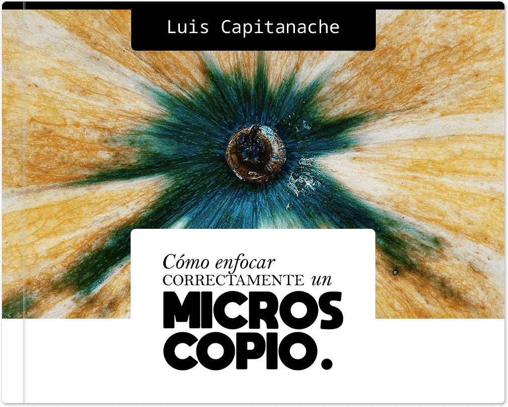

Proemio

Proemio#
Este libro es una obra nacida de mi práctica y mi conocimiento para el uso del microscopio compuesto, así como para una comprensión a grandes rasgos de la microscopía. Está dirigido a principiantes y a aquellos que deseen repasar procedimientos de forma rápida y concisa. No pretende ser una guía exhaustiva de estos temas. Para este último caso, sírvase consultar literatura especializada en estos rubros.
Este libro está protegida bajo licencia Creative Commons Atribución-CompartirIgual 4.0 Internacional (CC BY-SA 4.0).
Sitio web: https://lcapitanache.github.io.
Índice de contenido
- 1. Notas de la versión
- 2. Dedicatoria
- 3. El microscopio
- 4. Algo de teoría
- 5. Procedimientos
- 6. Guía de compra
- 7. Microscopía en las redes sociales
- 8. Glosario